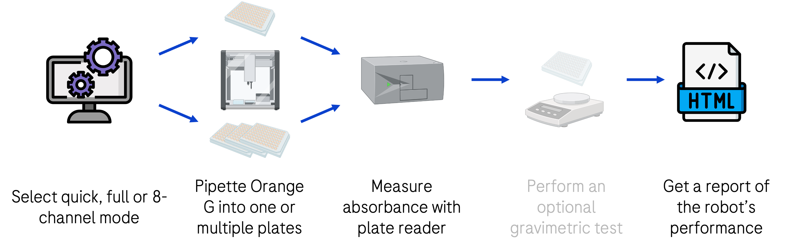

This gives an overview of the pipetting performance workflow developed for the I2S and ADME chapters at Roche pRED. The presented workflow provides a precise and intuitive approach for testing the pipetting accuracy and precision of automated liquid handling systems. It was adapted for public use to work through a Jupyter notebook instead of the proprietary AutoLab platform used internally at Roche.
Figure 1: Pipetting performance workflow steps. The gravimetric test was not implemented in the standalone version of the workflow provided here.
Three distinct run options are provided to suit different scenarios and time constraints. Please refer to the following table when deciding on which one to choose. The notebooks can be found in the project repository.
| Quick run | Full run | 8-channel run |
|---|---|---|
| 96- or 384-channel heads Uses 1 microplate Takes 20-30 minutes Quick performance check Quick example report |
96- or 384-channel heads Uses at least 3 microplates Takes ~45 minutes Thorough statistical analysis Full example report |
8- or single-channel heads Uses 1 microplate Takes 20-30 minutes Thorough statistical analysis 8-channel example report |
Table 1: Comparison of different run mode options. You can open the example reports to get an idea of the expected output of each mode.
Figure 2: Pipetting performance BPMN workflow modeled in Camunda Modeler. The AutoLab integration was configured with this BPMN.